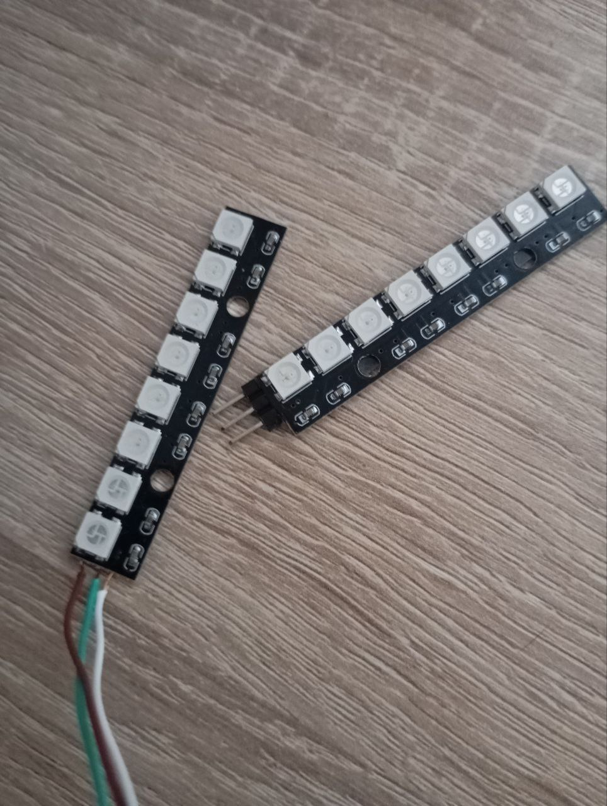

2026-02-19
13:58
Уже два дня “дебажу” управление мотором с микроконтроллера.
Собрал, видимо, все грабли. Потому что зачем читать инструкции — надо воткнуть, и мотор делает брррр… 🙄
Плюс, я, наверное, начал понимать, зачем нужны девборды. Сегодня спалил суммарно уже вторую “индикаторную ленту” - она сорвалась с липкой ленты и приземлилась на неудачно подвернувшуюся катушку припоя. Которая что-то там закоротила.
В первый раз была похожая ситуация.
Если добавить к той же Nucleo/Uno шилд с кнопками и индикаторами — провода от них не будут мешаться под руками.
#мысли_вслух

11:07
Повесть “программист против физики”
Я подключаю мотор через модуль с двумя параллельно включенными MOSFET D4184.
Первое, с чем я столкнулся — постоянные перезагрузки и зависания
МК.
В целом, я этого даже ожидал — до этого ни разу не ставил никаких
фильтров по питанию.
Воткнул электролит помощнее — мотор забрррчал.
На этом этапе оно уже как-то работало. Я немного поигрался и даже видосик заснял.
Но при снижении коэффициента заполнения до 50–60% у мотора почти
полностью пропадал крутящий момент.
Любое вмешательство — и он останавливался.
Сначала я начал крутить параметры ШИМ.
На маркетплейсе (даташит я тогда ещё не нашёл) было написано, что
модуль работает на частотах до 20 kHz.
Я поднял частоту до ~14 kHz.
Стало хуже.
Теперь мотор останавливался уже на 70% от малейшего прикосновения.
Пошёл мучить LLM.
Сначала неправильно прочитал осциллограмму и решил, что MOSFET открывается недостаточно быстро и нужен gate driver.
Потом понял, что проблема в индуктивной нагрузке.
Об этом, кстати, даже у Гайвера написано — просто я не сопоставил
сразу.
Поставил flyback diode — мотор ожил.
Но при попытке остановить его рукой — снова перезагрузки и зависания МК.
Тогда я запитал МК от отдельного источника — и всё заработало как часы.
Во второй день я пытался победить зависания не используя мозг. 🤪
После этого поведение более-менее стабилизировалось, но выглядело как месиво.
Сегодня с утра вспомнил, что вообще-то я тут же год назад про фильтры писал.
Рассчитал RC и LC на ~1kHz. - RC в целом работает, но когда опускаю коэффициент заполнения ниже 5% - МК перезагружается. - LC работает стабильно.
в диапазоне 0–30% ШИМ мотор вёл себя нелинейно —
при увеличении мощности на некоторых участках обороты падают. А также
минимальные обороты слишком высокие Оказалось переборщил с
конденсаторами на моторе
В итоге: